It glitters. How sure are you that it's gold?
Each page explains one idea with a picture you can play with. 63 so far.
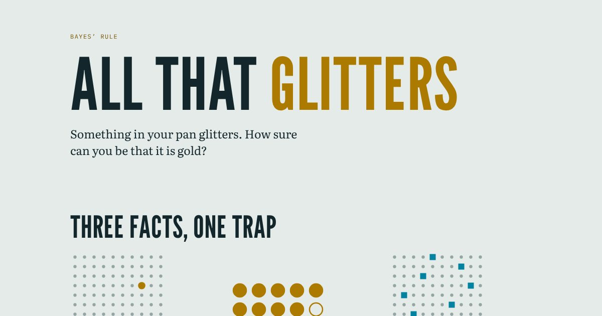
Bayes' RuleAnalytics and data science18 pages
- Bayes' RuleSomething in your pan glitters. How sure can you be that it is gold?
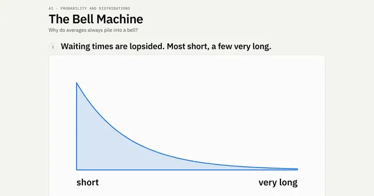
The Bell MachineWhy do averages always pile into a bell? The central limit theorem, hands on.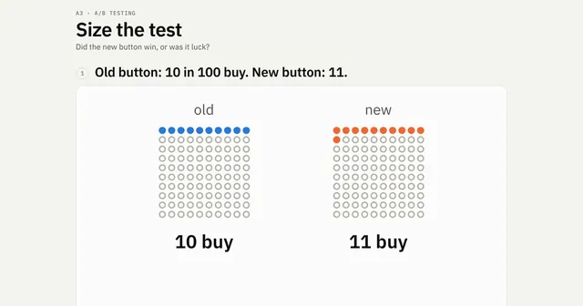
Size the TestDid the new button win, or was it luck? Sample size and power for an A/B test.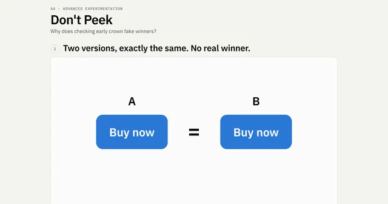
Don't PeekWhy does checking a test early crown fake winners? Peeking and sequential testing.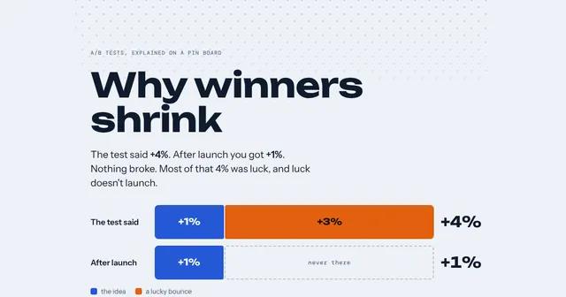
Why A/B Winners ShrinkThe test said +4%. After launch you got +1%. Nothing broke.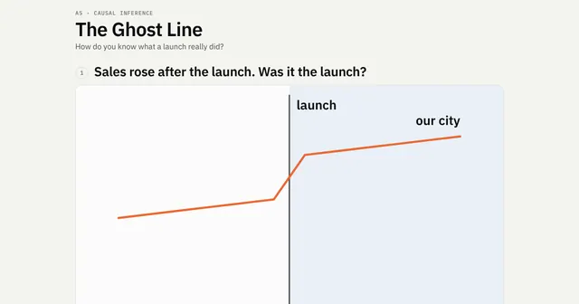
The Ghost LineHow do you know what a launch really did? Difference-in-differences.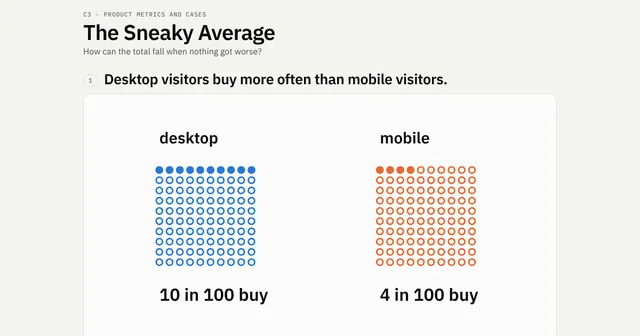
The Sneaky AverageHow can the total fall when nothing got worse? Diagnosing a metric change.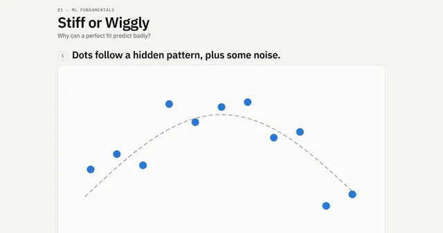
Stiff or WigglyWhy can a perfect fit predict badly? The bias-variance trade-off.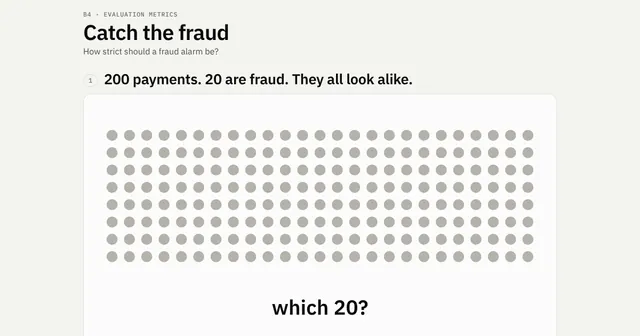
Catch the FraudHow strict should a fraud alarm be? Precision, recall and the threshold.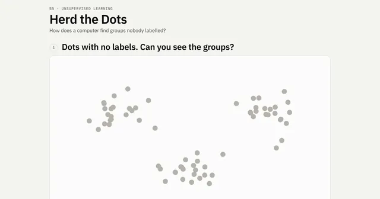
Herd the DotsHow does a computer find groups nobody labelled? k-means clustering.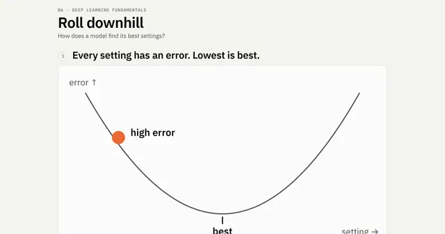
Roll DownhillHow does a model find its best settings? Neural networks and backpropagation.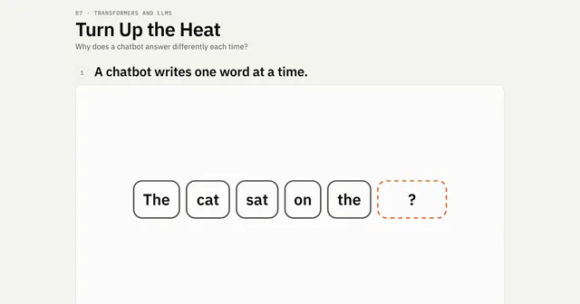
Turn Up the HeatWhy does a chatbot answer differently each time? Encoders, decoders and sampling.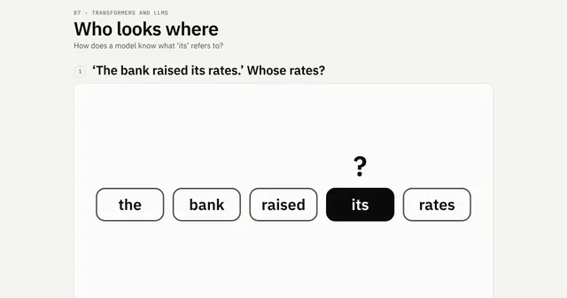
Who Looks WhereHow does a model know what “its” refers to? Self-attention and the transformer.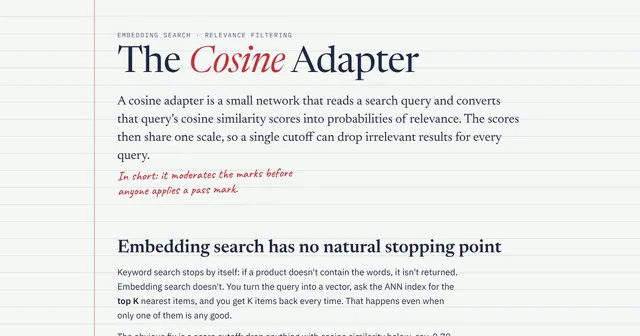
The Cosine AdapterA small network that turns similarity scores into probabilities, so one cutoff works for every search query.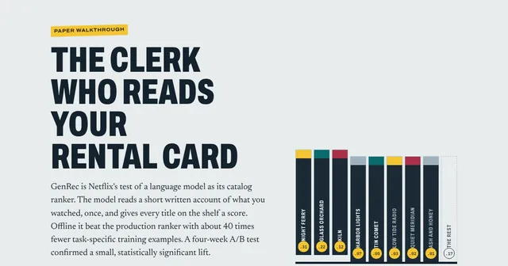
GenRec at NetflixA paper walkthrough: Netflix tests a language model as the ranker for its whole catalog.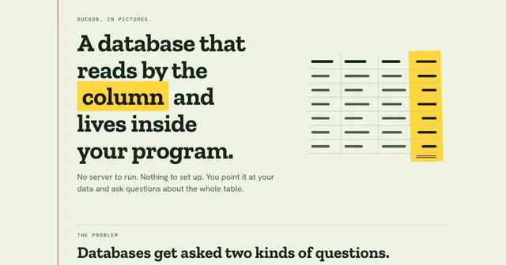
DuckDB in PicturesA database that reads by the column and lives inside your program.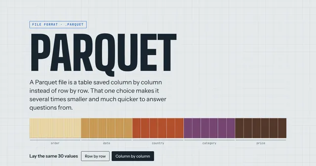
Parquet FilesA table saved column by column instead of row by row, and why that makes it smaller and quicker.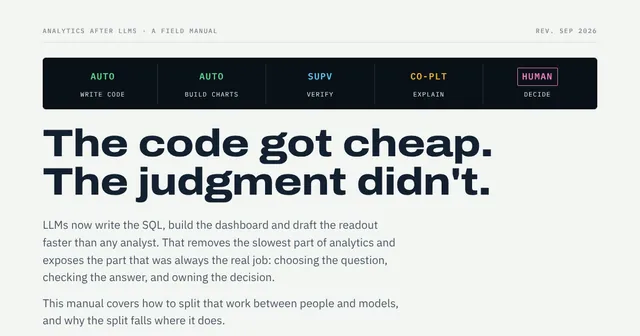
The Analyst's CockpitAI now writes the SQL and builds the charts. The judgment is still the analyst's job.
AI and technology5 pages
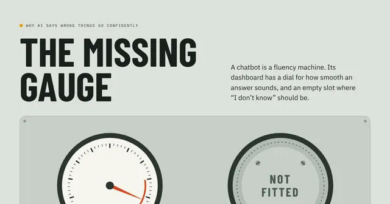
The Missing GaugeWhy AI says wrong things so confidently: a dial for how smooth an answer sounds, and none for “I don’t know”.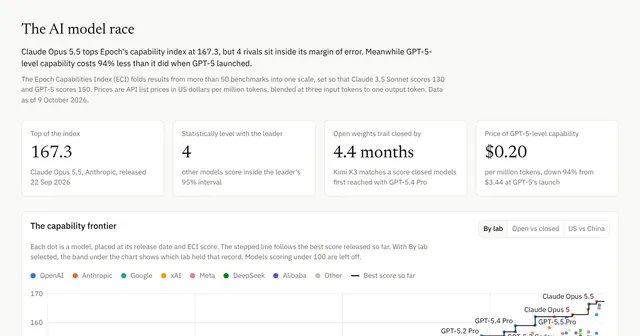
The AI model raceWhich lab leads on capability, how close its rivals are, and what a given level now costs.As of October 2026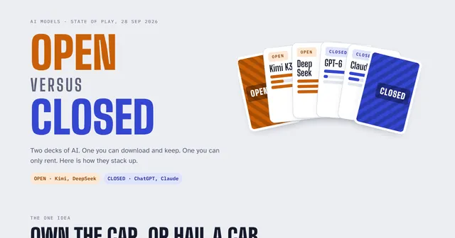
Open Weights vs ClosedAI you can download and keep, against AI you can only rent.As of September 2026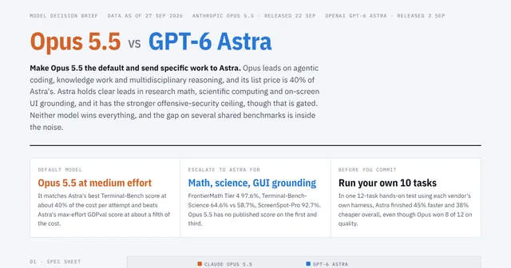
Opus 5.5 vs GPT-6 AstraWhich model for which work: benchmarks, prices and the caveats behind them.As of September 2026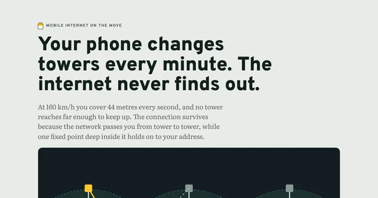
Internet at 200 km/hOn a fast train your phone changes towers every minute. The internet never finds out.
Body and health8 pages
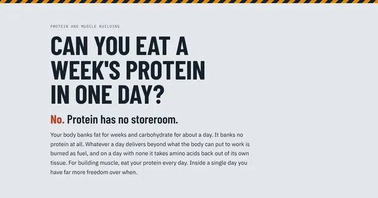
Protein Has No StoreroomCan you eat a week's protein in one day? No. The body banks fat and carbohydrate, but not protein.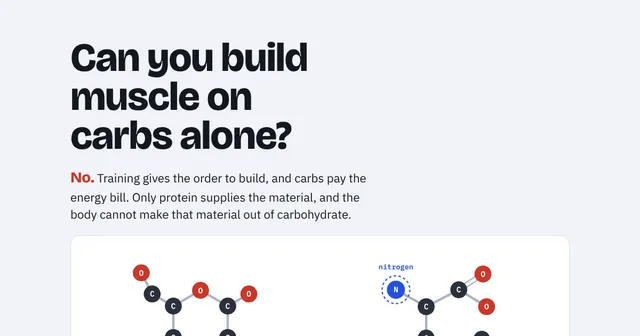
Can Carbs Build Muscle?Training gives the order to build and carbs pay the energy bill. Only protein supplies the material.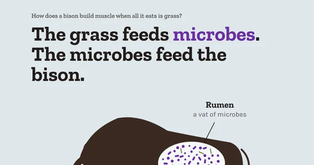
How Bison Build MuscleA bison eats only grass and still builds muscle. The grass feeds microbes, and the microbes feed the bison.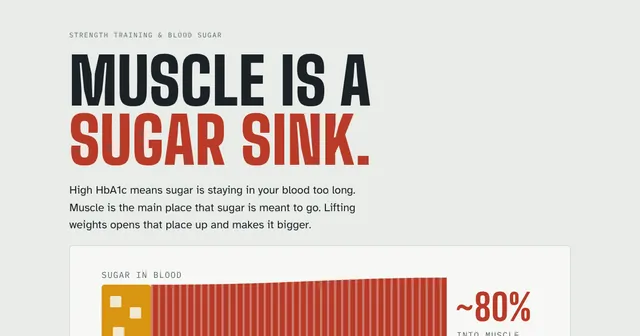
The Sugar SinkMuscle is where blood sugar is meant to go. How lifting weights brings HbA1c down.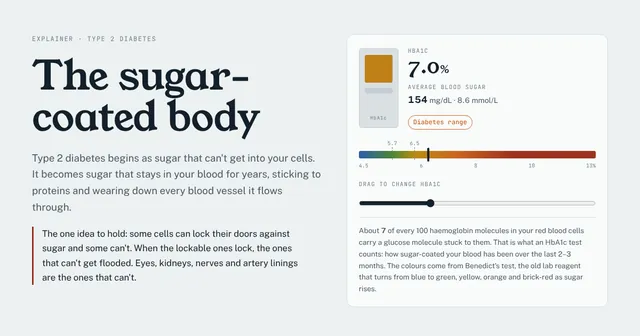
The Sugar-Coated BodyType 2 diabetes, from sugar that can't get into your cells to the damage it does over years.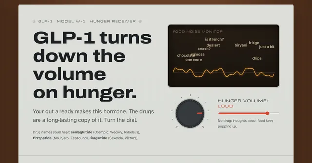
GLP-1 Hunger DialHow Ozempic-style drugs copy a gut hormone and turn down the volume on hunger.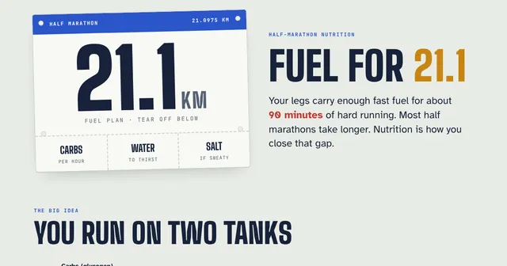
Fuel for 21.1Your legs carry about 90 minutes of fast fuel. How to eat and drink for a half marathon.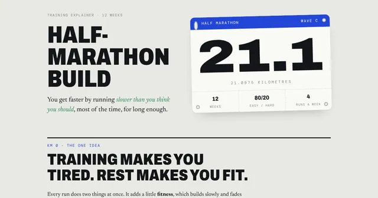
Half-Marathon BuildTwelve weeks of training, and why you get faster by running slower than you think you should.
Brain and mind11 pages
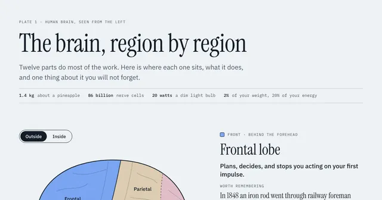
Brain Field GuideTwelve parts of the brain: where each one sits, what it does, and one thing about it you will not forget.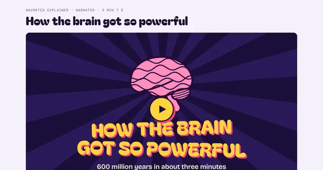
How the Brain Got So PowerfulThirteen chapters, from the first neurons to you.Narrated, 3 minutes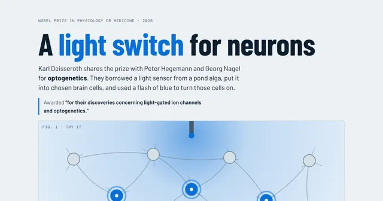
A Light Switch for NeuronsOptogenetics, the 2026 Nobel Prize in medicine: a light sensor from a pond alga that switches brain cells on.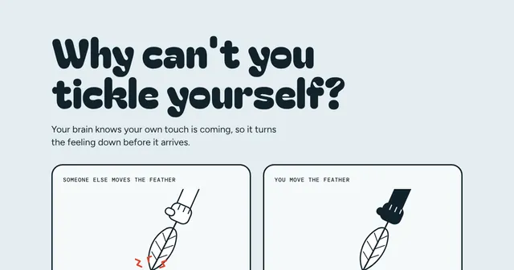
Why can't you tickle yourself?Your brain knows your own touch is coming, so it turns the feeling down before it arrives.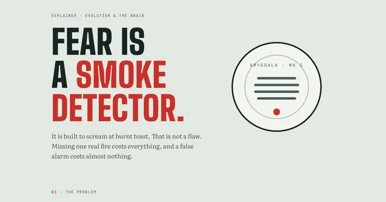
The Fear AlarmFear is a smoke detector, built to scream at burnt toast, because missing one real fire costs everything.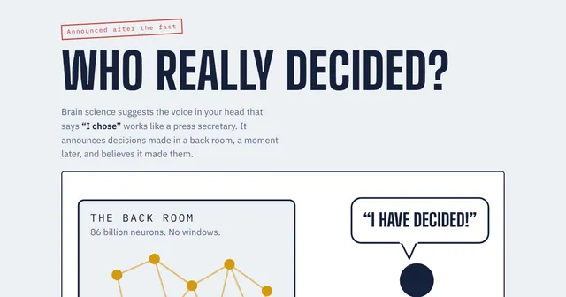
Who Really Decided?The voice in your head that says “I chose” may be a press secretary, announcing a decision already made.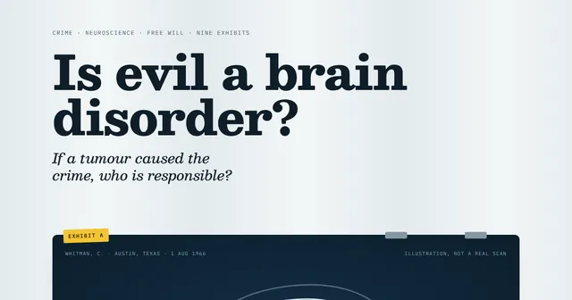
Is Evil a Brain Disorder?If a tumour caused the crime, who is responsible? Nine exhibits on crime, the brain and free will.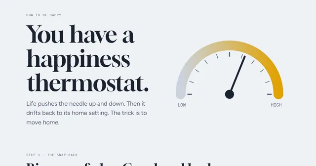
The Happiness ThermostatGood news fades, and so does bad. What moves your home setting instead.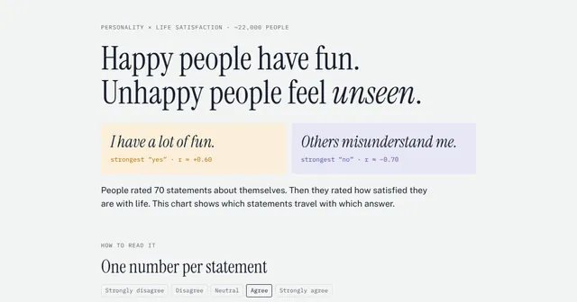
What Happy People SaySeventy statements people made about themselves, ranked by how closely each one travels with life satisfaction.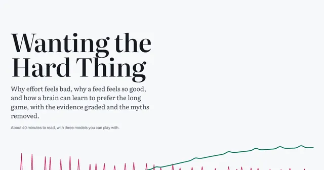
Wanting the Hard ThingWhy a feed feels so good and effort feels bad, and how a brain can learn to prefer the long game.40-minute read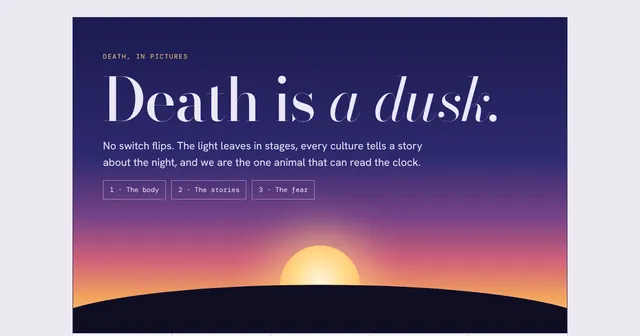
The Long DuskDeath in pictures: what happens in the body, the stories every culture tells, and why we fear it.
Big ideas5 pages
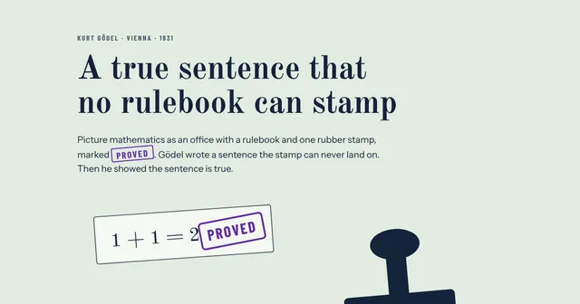
Gödel's Incompleteness TheoremA true sentence that no rulebook can prove, explained with an office and one rubber stamp.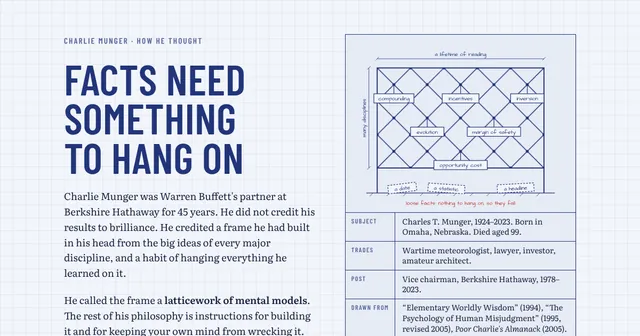
Munger's LatticeworkHow Charlie Munger thought: a frame built from the big ideas of every discipline, with facts hung on it.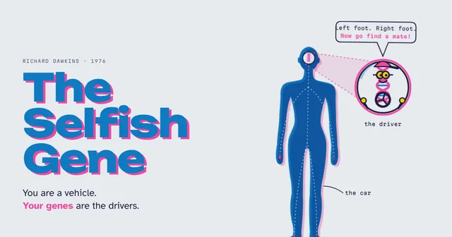
The Selfish GeneRichard Dawkins's idea in pictures: you are a vehicle, and your genes are the drivers.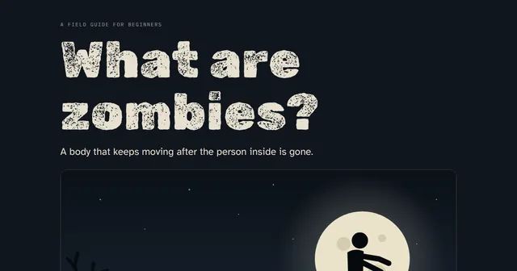
What Are Zombies?A body that keeps moving with nobody home: Haitian folklore, zombie ants, zombie cells and zombie companies.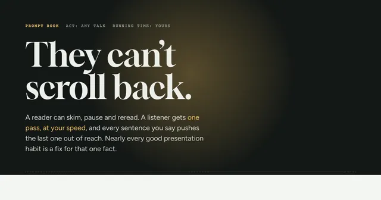
One PassA reader can reread. A listener gets one pass. Nearly every good presentation habit fixes that one fact.
World and history8 pages
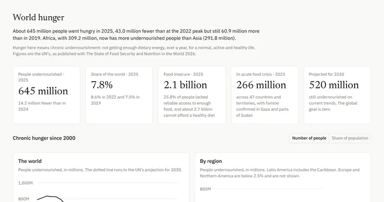
World hungerWho goes hungry, where, and how that has changed since 2000, in the UN’s figures.Data to 2025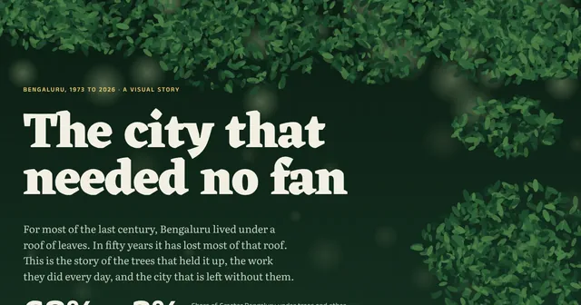
Bengaluru's Lost CanopyBengaluru lived under a roof of leaves. In fifty years it lost most of that roof.Long read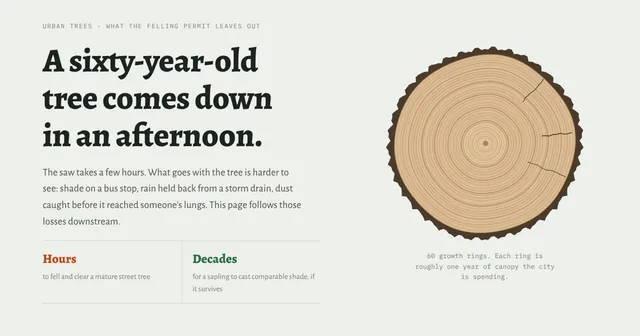
The Felled CanopyA sixty-year-old tree comes down in an afternoon. What goes with it is harder to see.- Downstream of the SawA forest works like infrastructure. Clear it, and the jobs it did move downhill.
- Tending Plants WellA plant is a solar-powered pump. Light runs it, watering keeps up with it, and roots need air.
- Key Events of WW-IIThe war had one shape: Axis power rose for nearly three years, turned in eight months, then drained away.
- Serial Killers' Golden AgeFor three decades America produced serial killers at a record rate. Then the numbers fell by about 85%.
- Reading a PropertyYou aren't buying a flat. You're buying six things stacked up, and a site visit shows only the top two.
Screen and sport8 pages
- Federer and NadalFederer took away your time. Nadal took away your space. Forty meetings, compared.
- Inside the Pit BoxTwo seconds, four tyres, twenty people: a Formula 1 pit stop you can play in slow motion.
- The Chemistry of Breaking BadWalter White called chemistry the study of change. The whole show, read that way.Full spoilers
- Diagnosing Dr. HouseHouse never states a philosophy. He runs one. A differential diagnosis of what he believes.
- The House DifferentialA fan's case file on House, M.D.: eight seasons, 177 episodes and one very grumpy genius.
- The Office, FilmedA pretend documentary about a very boring paper company, and why the camera is in on the joke.
- Case File #99A fan's evidence board for Brooklyn Nine-Nine. Drag anything on the board.
- Dexter's Slide BoxA fan's evidence table for Dexter.Spoilers